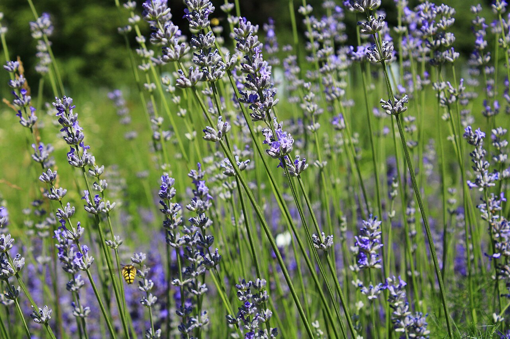
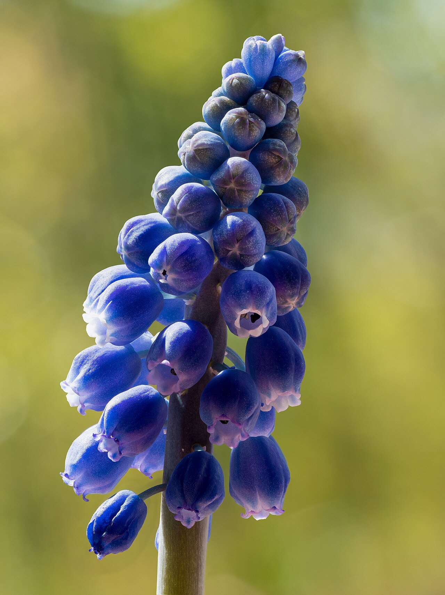
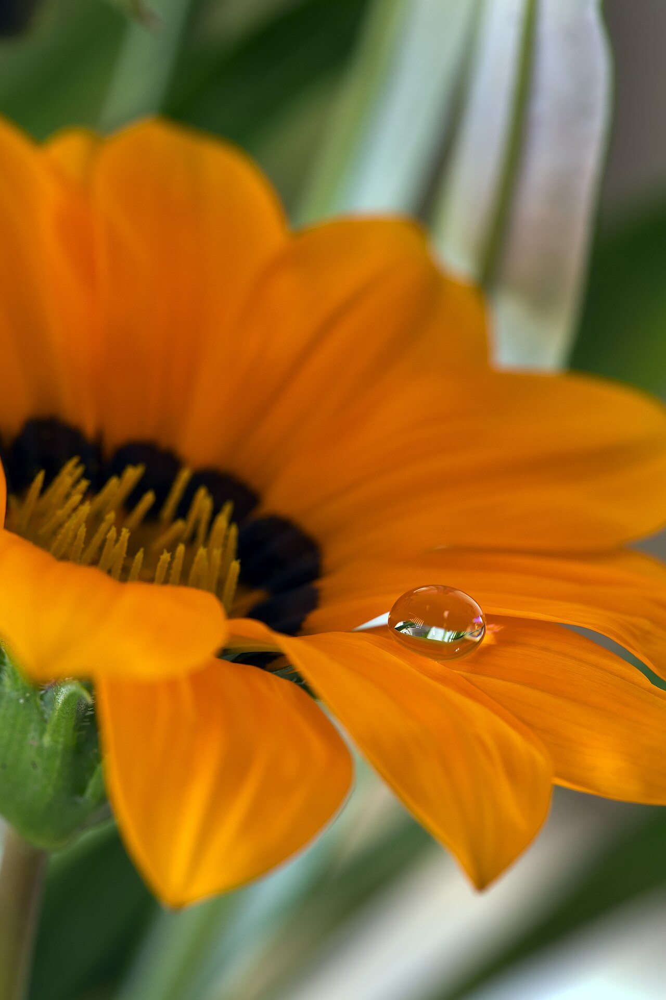
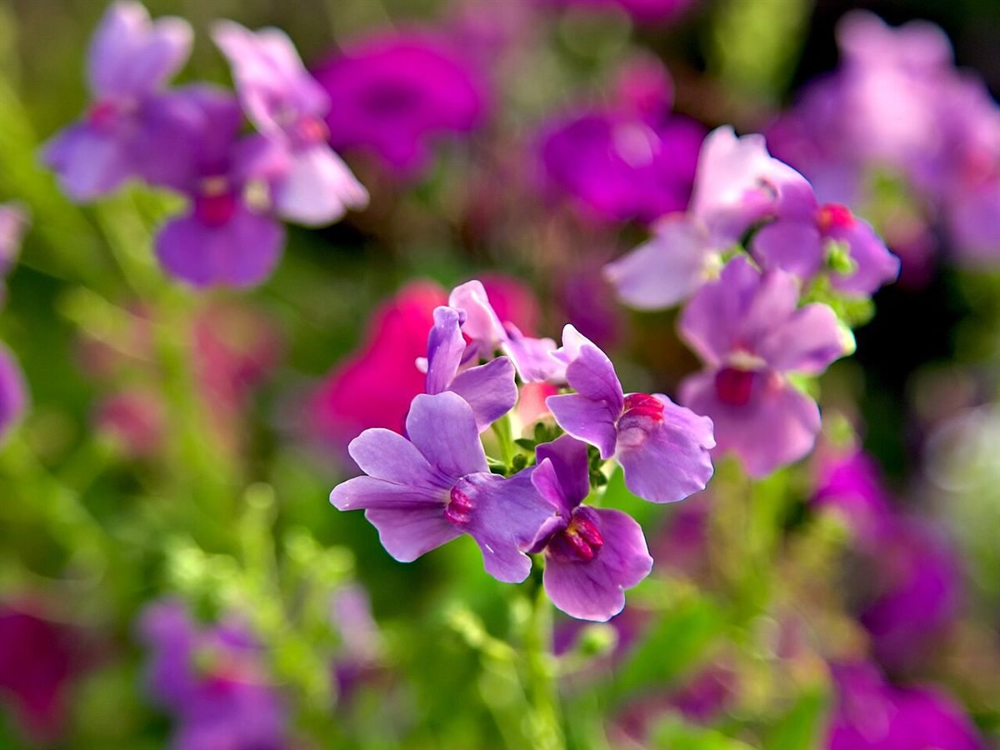
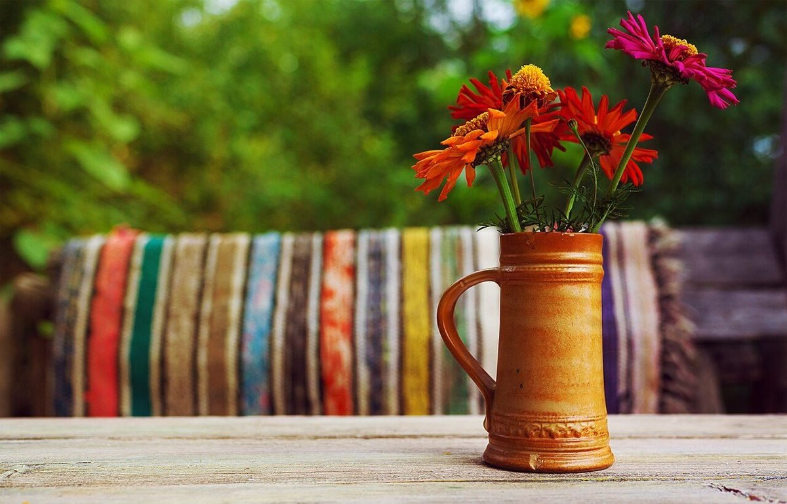

花桶のならぶ棚(イメージ)

国外のイメージ(ポーランド) 
撮影地不明のイメージ 
国外のイメージ(ウズベキスタン) 
国外のイメージ(ドイツ) 
撮影地不明のイメージ 
国外のイメージ(英国ウェールズ)
並んでいるのは松戸市やお店の写真ではなく、国内他地域・国外・撮影地不明のフリー素材です。実際の商品写真は、お店からご提供いただいたものに差し替えます。
制作側の連想
「家」と「お花屋さん」のあいだ
店名の由来は分かりません。このページを作った側は、「ともちゃん家」という呼びかけのような響きに、お宅の玄関先を思い浮かべました。そこに「お花屋さん」と続くので、家の前に花桶がいくつか並ぶような、気取らない店先を連想しています。ページ全体を表札と玄関先に見立てたのは、そのためです。
お店の考えとは関係のない、制作側の連想です。

お店のこと(確認できたものだけ)
| 屋号 | ともちゃん家のお花屋さん(花屋) |
|---|---|
| 所在地 | 〒270-2221 千葉県松戸市紙敷1073-2 |
| 電話 | なし |
| 営業時間 | 準備中 |
| 定休日 | 準備中 |
| SNS | Instagram @tomochanchi_ohana |